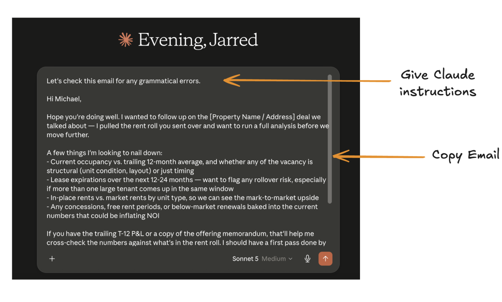
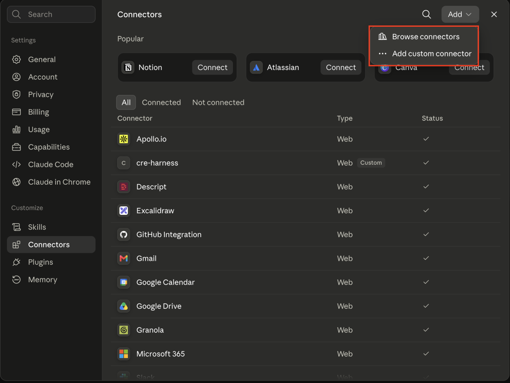
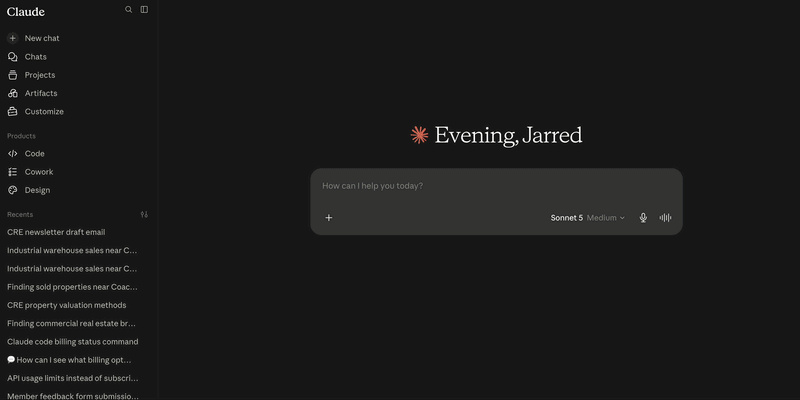

A Claude connector gives Claude permissioned access to another system, such as your CRM or Yardi, so it can read and update records instead of waiting for pasted text. Add one in Customize > Connectors: pick from the directory, or add a custom connector by URL. Custom connectors are remote MCP servers. Free plans get one custom connector.
The AI in Real Estate Field Guide puts four applied CRE workflows, an eight-question readiness scorecard and a 30-day pilot plan in one 18-page PDF.
What does a connector change for a CRE team?
For most teams, reviewing an email with Claude looks like this:

That works, but it makes a person the integration layer. Every email, CRM note and property report has to be copied in by hand, and Claude only knows what someone remembered to paste.
A connector bridges Claude to an app, service or data source directly. Claude can then look things up, and with permission make changes, using the access of the account you sign in with.
How do you add a connector in Claude?

- Open Customize > Connectors and click + to browse the directory.
- Pick the connector and sign in with the account whose permissions Claude should inherit. Claude sees what that account sees, no more.
- If your system is not listed, choose Add custom connector, enter a name and the server URL, and add OAuth details if the provider gave you any.
- Set tool permissions. Start read-only, and require approval for anything that writes, sends or deletes.
- On Team and Enterprise plans, only an owner can add a connector for the organization. Owners can restrict it to read-only tools or require approval, and each member still signs in individually.
Source: Anthropic's help pages on using connectors and custom connectors, September 2026.
Which CRE systems already have a Claude connector?
Check the directory before building anything. The directory changes often, so treat this as a snapshot:
| System | Claude connector, as of September 2026 | Notes |
|---|---|---|
| Yardi (property management) | Yes: Virtuoso Connector | Published by Yardi in February 2026 through its Virtuoso AI platform. |
| Yardi Matrix (market data) | Yes: Yardi Matrix Connector | Released June 17, 2026, as an add-on to Virtuoso Enterprise or standalone. |
| CRM | Depends on the CRM | Check the directory first. folk, used in the example below, publishes an MCP server for Claude. |
| Rent Manager, AppFolio, Argus | Check the directory | Where there is none, a custom connector needs an API the vendor lets you use. |
| County property and deed records | Custom | Public data, so a custom connector is allowed. See the example below. |
| CoStar | No | No connector, and its terms bar AI agents. Why. |
Yardi's connectors are announced in its June 17, 2026 release. Connected to Yardi, Claude can answer rent, lease, billing and work-order questions without someone exporting a report and filtering rows in Excel first.
Example: turning a morning of prospecting into CRM records
Commercial real estate runs on relationships, and they start everywhere: tours, lunches, referrals, a golf course. By noon a broker has business cards and phone notes, and none of it is in the CRM.
At one of our Claude in CRE workshops, the team used folk as its CRM. Once folk was connected, the notes became structured contacts through Claude instead of someone retyping every field. The prompt:
Add these three people to the CRM as contacts.
Link each one to their company, tag them "Industrial - Sept tours",
and create a follow-up task for Friday.
Show me the records before you save anything.
[paste the notes or business-card text]The last line matters. Keep a review step on anything that writes to a system of record until you have seen it get the fields right on real data.
When do you need a custom connector?
When the system you need has no connector but does have data you are allowed to use through an API or a public source.

Say you are looking at an 80,000-square-foot industrial warehouse in Tampa. The first questions are who owns it, what it last sold for and what nearby buildings traded at. Teams usually answer those in a licensed platform and then copy the screen into chat.
We built a custom connector that reads county property appraiser and deed records and traces the owning LLC through Sunbiz, Florida's corporate registry. Claude can then answer the ownership and comps questions from public record, with each figure naming its source file and date. The build is described in the county records connector case study.
That is the allowed path. Claude cannot connect to CoStar, and we will not build a connector that shares a login or scrapes a licensed service.
What should a connector not be allowed to do?
- Write before it has earned it. Read-only first. Turn on writes one tool at a time.
- Use a shared login. Each person signs in as themselves, so the audit trail names who acted.
- Send without approval. Email, tenant notices and anything a client sees stays behind a person.
- Connect to a server you have not vetted. A connector's responses reach the model, and Anthropic warns about prompt injection from untrusted servers.
- Carry licensed data your vendor excludes from AI tools.
Common questions
Is there a Yardi connector for Claude?
Yes. As of September 2026 Yardi publishes two: the Virtuoso Connector for portfolio data from your Yardi system, published in February 2026, and the Yardi Matrix Connector for market data, released June 17, 2026. Your Yardi license and modules decide what Claude can see.
How many custom connectors can I add in Claude?
Free plans are limited to one custom connector. Pro, Max, Team and Enterprise plans allow more. On Team and Enterprise plans only an owner can add a custom connector for the organization, and each member then signs in to it separately.
Can a custom connector reach a system on our office network?
Not directly. Claude connects to custom connectors from Anthropic's cloud, so the server has to be reachable over the public internet. A system behind a VPN or firewall needs a secured public endpoint, or a firewall rule that allows Anthropic's published IP ranges.
What is the difference between a connector and MCP?
MCP, the Model Context Protocol, is the open standard connectors are built on. Anthropic donated it to the Agentic AI Foundation, part of the Linux Foundation, in December 2025. A connector is an MCP server packaged so you can add it inside Claude and sign in.
Does a connector give Claude access to everything in the system?
No. Claude acts with the permissions of the account you sign in with, and only through the tools the connector exposes. On Team and Enterprise plans an owner can also restrict a connector to read-only tools or require approval before Claude writes anything.
Do not make your team act as the connector. Give Claude a controlled route to the source system.
Continue with the commercial real estate AI workflow hub, or read the original version in the altr'd newsletter on LinkedIn.